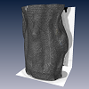
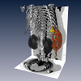
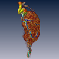

This demo shows how Amira is used in small animal imaging. In this example mice have been treated subcutaneously with a carcinogen agent to induce the creation of a tumor. The reseachers of this study were interested in quantifying the vascularization (formation of capillary blood vessels) of the tissue in the periphery of the tumor.
To do so, the mice are administered a contrast agent prior to being scanned with a micro-CT scanner. From the resulting volume the region of the tumor is cropped out and further processed with Amira's skeletonization tools. The result is a SpatialGraph data object that describes the capillary network in terms of curved lines in 3D space with particular length and thickness together with its branching pattern.
The demo presents the micro-CT data first as a volume rendering with a gray color map and the data window set to view the skin of the animal. Next, the data window is changed to view the bones and the cardiovascular system. Thirdly, the cropped out tumor region is visualized using a different color map together with the extracted skeleton of the capillary network.
We are grateful to Dr. E. Stepina and Dr. P. Hauff, Bayer HealthCare Pharmaceuticals for kindly providing the data.
  